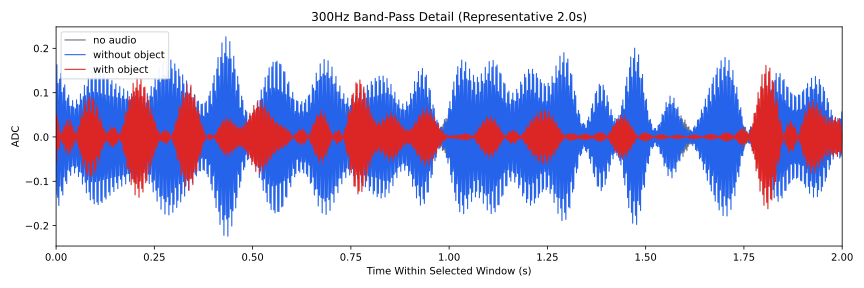
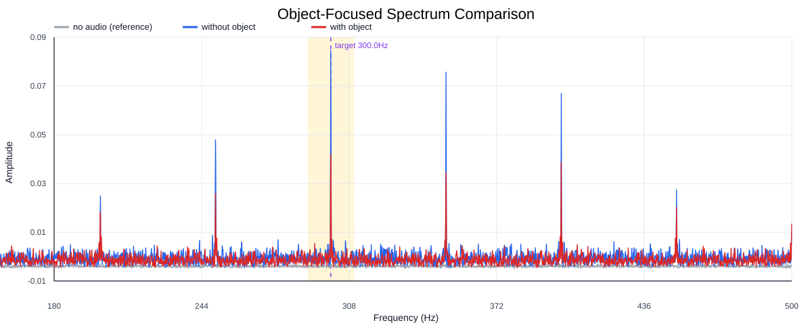
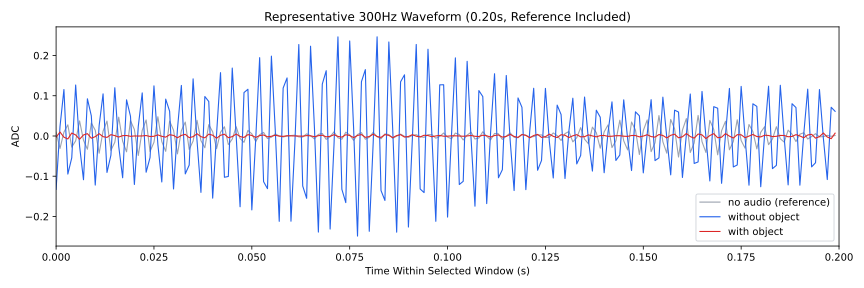
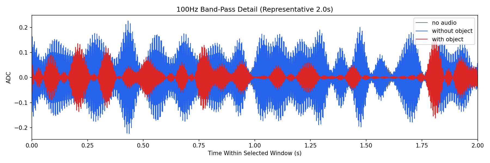
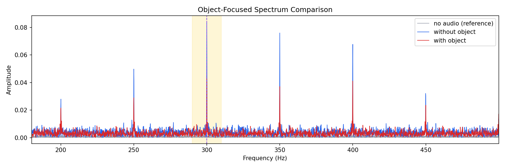
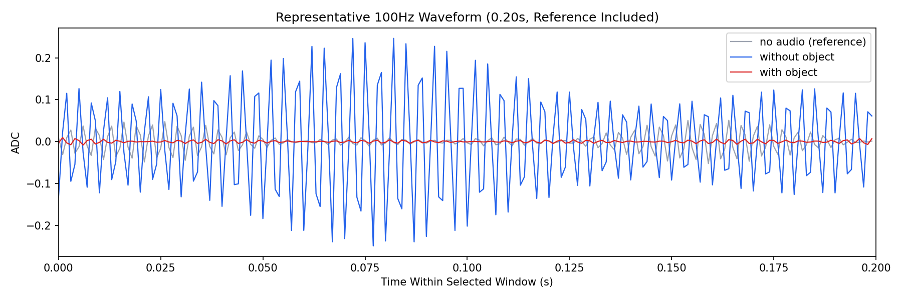

Background: F:\项目类文件夹\异物检测4.10\Data_Dual\frequency_sweep\0300Hz\repeat_02\raw\no_audio.csv
Without object: F:\项目类文件夹\异物检测4.10\Data_Dual\frequency_sweep\0300Hz\repeat_02\raw\without_object.csv
With object: F:\项目类文件夹\异物检测4.10\Data_Dual\frequency_sweep\0300Hz\repeat_02\raw\with_object.csv
| Metric | 无音频 | 100Hz无异物 | 100Hz有异物 | 无异物/无音频 | 有异物/无异物 | 有异物/无音频 |
|---|---|---|---|---|---|---|
| centered_rms | 0.079511 | 0.205018 | 0.150557 | 2.5785 | 0.7344 | 1.8936 |
| raw_target_amp | 0.000658 | 0.084240 | 0.044234 | 128.1039 | 0.5251 | 67.2661 |
| filtered_rms | 0.016756 | 0.070647 | 0.045517 | 4.2161 | 0.6443 | 2.7164 |
| filtered_target_amp | 0.000658 | 0.084240 | 0.044234 | 128.1039 | 0.5251 | 67.2661 |
| filtered_energy_ratio | 0.044412 | 0.118741 | 0.091400 | 2.6736 | 0.7697 | 2.0580 |
| window_filtered_target_amp_mean | 0.007117 | 0.083836 | 0.044745 | 11.7789 | 0.5337 | 6.2867 |
| window_filtered_target_amp_std | 0.006878 | 0.033732 | 0.026324 | 4.9040 | 0.7804 | 3.8270 |





